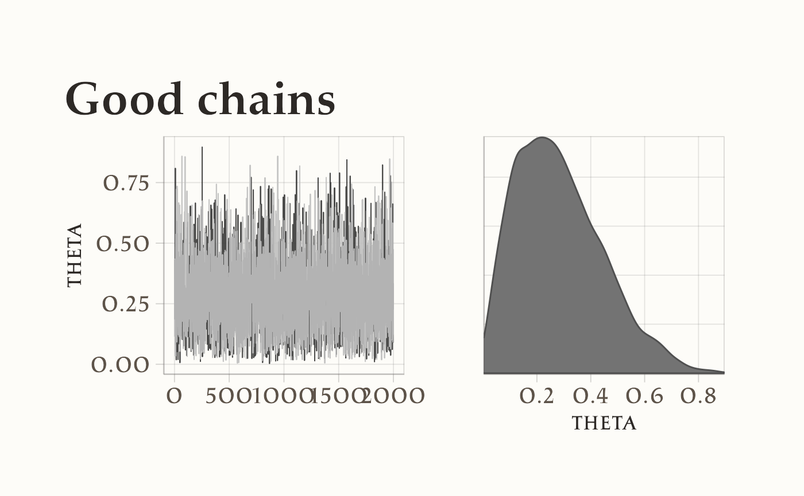
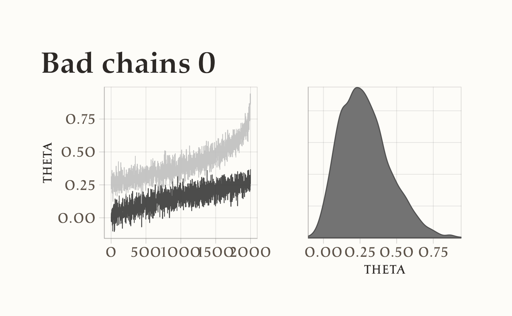
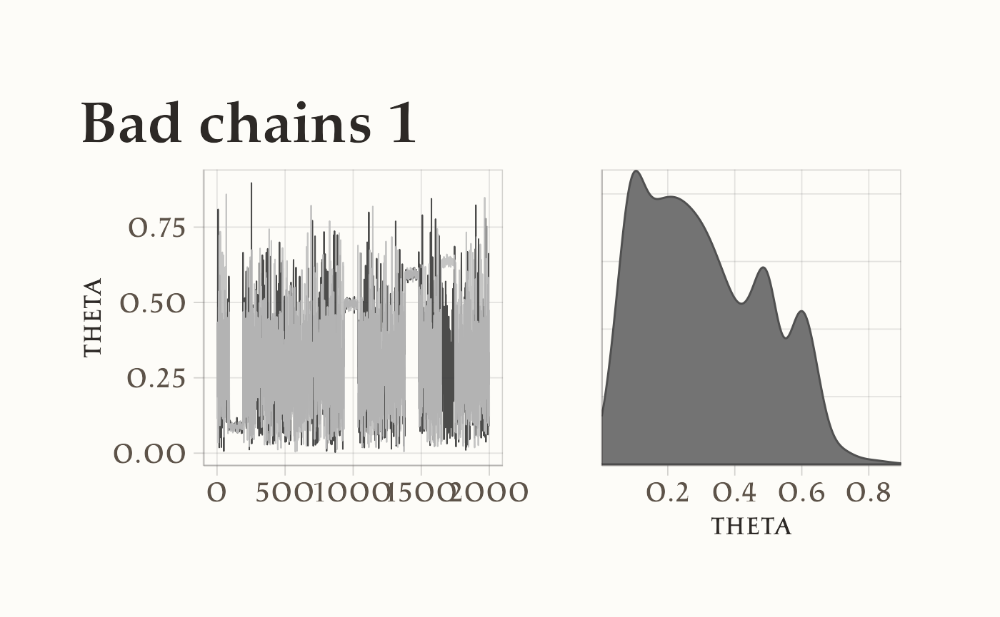

here::here("code", "_common.R") |> source()
# Carichiamo i pacchetti necessari
if (!requireNamespace("pacman")) install.packages("pacman")
pacman::p_load(cmdstanr, posterior, insight, bayesplot, ggplot2)52 Diagnostica delle catene markoviane
Introduzione
Una volta eseguita la stima di un modello in Stan, il primo passo non è interpretare subito i parametri, ma verificare se la procedura di campionamento ha funzionato correttamente. Le catene MCMC, infatti, possono produrre risultati fuorvianti se non hanno esplorato in modo adeguato lo spazio dei parametri.
Per questo motivo, Stan fornisce diversi indicatori diagnostici che permettono di valutare la qualità del campionamento. Questi strumenti servono a rispondere a domande fondamentali:
- Le catene hanno raggiunto la convergenza verso una stessa distribuzione?
- La variabilità campionata rappresenta in modo fedele la distribuzione posteriore?
- Ci sono segnali che i campioni non siano sufficienti o che alcune regioni della distribuzione non siano state esplorate?
Prima di utilizzare i risultati di un modello, è quindi necessario controllare con attenzione queste diagnosi. Solo dopo aver verificato che il campionamento sia affidabile possiamo procedere con l’analisi e l’interpretazione dei parametri.
52.1 Grafici di tracciamento
Un modo semplice e visivo per capire se un algoritmo MCMC (un metodo per stimare modelli bayesiani) sta funzionando bene è osservare i grafici di tracciamento, o trace plots. Immaginate che ogni parametro del modello (ad esempio, l’effetto di un farmaco o la correlazione tra due variabili) abbia una sua “storia”, raccontata attraverso migliaia di passaggi (iterazioni) dell’algoritmo. Il trace plot non è altro che il grafico di questa storia: sull’asse orizzontale ci sono le iterazioni, su quello verticale i valori che il parametro assume di volta in volta.
Quando tutto funziona correttamente, il grafico assomiglia a una “ciaspata” rumorosa e compatta attorno a un valore medio stabile – un po’ come guardare la neve sullo schermo di una TV non sintonizzata, ma confinata in una fascia orizzontale. Questo significa che la catena si sta mescolando bene: l’algoritmo sta esplorando in modo efficace la distribuzione dei valori plausibili per quel parametro.
Al contrario, un trace plot che mostra andamenti strani ci avvisa che qualcosa non va. Per esempio:
- se due catene diverse (partite da punti diversi) per lo stesso parametro non si incontrano mai e restano separate, significa che non stanno convergendo verso la stessa conclusione;
- se si osservano salti ampi o andamenti a gradini, l’algoritmo potrebbe non stare campionando in modo efficiente.
L’obiettivo è quindi riconoscere un andamento “sano”: un rumore casuale e stabile, senza pattern sistematici o derive nel tempo. Questo ci dà fiducia che le stime ottenute siano affidabili.
Come suggerito da Martin et al. (2022), è utile confrontare trace plot di catene che convergono bene con altri che mostrano problemi. Questi ultimi segnalano che è necessario rivedere il modello o le impostazioni dell’algoritmo, prima di trarre conclusioni.
Osservando i grafici qui sotto, noterete:
- a sinistra, l’andamento della catena (trace plot),
- a destra, la densità stimata dei valori campionati.
Un trace plot ideale mostra un andamento oscillante ma stabile, e la densità si avvicina alla classica forma a campana.
#> $good_chains
#> [1] 2 2000
#>
#> $bad_chains0
#> [1] 2 2000
#>
#> $bad_chains1
#> [1] 2 2000


52.1.1 Cosa fare se le catene non convergono?
Nella pratica, non sappiamo come sia fatta la “vera” distribuzione a posteriori. Per questo i trace plot sono così utili: ci avvisano quando qualcosa non funziona. Se ottenete grafici simili agli esempi “cattivi”, potete provare a:
- Rivedere il modello. Le assunzioni fatte (siano esse le prior o la struttura del modello) sono appropriate per i vostri dati?
- Aumentare il numero di iterazioni. A volte, far girare l’algoritmo più a lungo aiuta a smussare comportamenti anomali a breve termine.
Quello dei trace plot è uno strumento diagnostico semplice ma potente, fondamentale per chiunque voglia utilizzare modelli bayesiani in modo consapevole.
52.2 I grafici della densità posteriore sono adeguati?
I grafici della densità posteriore sono tra gli strumenti più immediati e informativi per valutare la qualità dei risultati di un’analisi bayesiana. Questi grafici mostrano la forma della distribuzione dei valori campionati per un parametro, offrendo una rappresentazione visiva diretta della nostra incertezza dopo aver osservato i dati.
In condizioni ideali, la densità posteriore di un parametro dovrebbe presentare una forma regolare e coerente con le aspettative teoriche. Ad esempio, se abbiamo utilizzato una distribuzione a priori normale, ci aspettiamo spesso (ma non sempre) una forma approssimativamente simmetrica e unimodale. Una curva liscia e ben definita suggerisce che le catene di Markov hanno esplorato in modo efficace lo spazio del parametro e che i campioni ottenuti sono rappresentativi della distribuzione sottostante.
Tuttavia, quando la densità appare irregolare – mostrando asimmetrie estreme, picchi multipli (bimodalità), o code eccessivamente lunghe – è un segnale che qualcosa potrebbe non aver funzionato come previsto. Una forma bimodale, in particolare, può indicare che l’algoritmo si è “bloccato” in regioni distinte dello spazio dei parametri, senza riuscire a integrarle in un’unica distribuzione coerente. In altri casi, una forma troppo piatta o irregolare può denotare una mancata convergenza o un’esplorazione incompleta.
Cosa fare se la densità posteriore non sembra adeguata?
- Aumentare il numero di iterazioni: Un campionamento più prolungato può aiutare a stabilizzare la stima e a fondare eventuali modalità separate.
- Rivedere le distribuzioni a priori: Una prior troppo vaga o inappropriata può portare a posteriori instabili o difficili da campionare.
- Ottimizzare l’algoritmo MCMC: A volte è necessario modificare i parametri di campionamento, come il passo di proposta o il numero di catene, per migliorare l’efficienza esplorativa.
In sintesi, l’ispezione visiva della densità posteriore non è solo un passaggio tecnico, ma un momento critico di riflessione metodologica. Ci permette di valutare se le nostre stime sono robuste e credibili, e se il modello è riuscito a cogliere la struttura dei dati in modo equilibrato e affidabile.
52.3 L’autocorrelazione nelle catene MCMC: come interpretarla e gestirla
Quando utilizziamo il metodo Monte Carlo basato su catene di Markov (MCMC) per stimare modelli bayesiani, dobbiamo tenere presente un aspetto cruciale: i campioni successivi prodotti dall’algoritmo non sono completamente indipendenti tra loro. Questo fenomeno, noto come autocorrelazione, è naturale nelle catene di Markov, ma quando diventa troppo pronunciato può indicare problemi nell’efficienza del campionamento.
L’autocorrelazione misura quanto un campione nella catena sia simile ai campioni precedenti. Idealmente, vorremmo che questa somiglianza diminuisca rapidamente all’aumentare della distanza tra i campioni. Per visualizzare questo comportamento, utilizziamo i correlogrammi – grafici che mostrano l’autocorrelazione a diverse “distanze” (lag) tra i campioni.
Un correlogramma ideale mostra:
- un’autocorrelazione iniziale (lag 1) non troppo elevata,
- un rapido decadimento verso lo zero all’aumentare del lag
Quando osserviamo questo pattern, possiamo essere confidenti che la catena si sta “mescolando” bene e sta esplorando efficientemente lo spazio dei parametri. Al contrario, un’autocorrelazione che persiste per molti lag suggerisce che la catena si muove lentamente attraverso lo spazio dei parametri, producendo campioni altamente correlati. Questo riduce l’efficienza del campionamento, poiché otteniamo meno informazioni indipendenti da ogni iterazione.
Cosa fare quando l’autocorrelazione è troppo alta?
Aumentare il numero di iterazioni: Una catena più lunga può compensare l’alta autocorrelazione, purché sia sufficientemente prolungata da esplorare adeguatamente tutto lo spazio dei parametri.
Applicare il thinning (diradamento): Possiamo conservare solo un campione ogni k iterazioni (ad esempio, ogni 5 o 10), riducendo così la correlazione tra i campioni conservati. Tuttavia, questo approccio va usato con giudizio, poiché spreca informazioni.
Rivedere le impostazioni dell’algoritmo: A volte, modificare il passo di proposta o altri parametri del campionatore può migliorare l’efficienza esplorativa.
L’analisi dell’autocorrelazione non è solo un tecnicismo, ma uno strumento fondamentale per valutare la qualità delle nostre stime bayesiane. Ci aiuta a garantire che i risultati su cui basiamo le nostre conclusioni siano robusti e affidabili.
52.4 La dimensione effettiva del campione: un indicatore cruciale per l’affidabilità delle stime
Quando lavoriamo con metodi MCMC, un concetto fondamentale da comprendere è quello di dimensione effettiva del campione (indicata come \(N_{\text{eff}}\)). A differenza del numero totale di campioni generati, \(N_{\text{eff}}\) rappresenta il numero equivalente di campioni statisticamente indipendenti che avrebbero la stessa precisione delle nostre stime.
Poiché i campioni MCMC sono tipicamente correlati tra loro, la dimensione effettiva è sempre inferiore al numero totale di iterazioni. La formula per calcolarla tiene conto di queste correlazioni:
\[ N_{\text{eff}} = \frac{T}{1 + 2 \sum_{s=1}^{S} \rho_{s}} \] dove \(T\) è il numero totale di campioni e \(\rho_{s}\) rappresenta l’autocorrelazione a diverse distanze (lag).
Interpretazione pratica:
- Un valore di \(N_{\text{eff}}\) prossimo a \(T\) indica che i campioni sono quasi indipendenti
- Un valore di \(N_{\text{eff}}\) molto inferiore a \(T\) segnala una forte autocorrelazione tra i campioni
Cosa fare se \(N_{\text{eff}}\) è troppo basso?
- Aumentare il numero di iterazioni: La soluzione più diretta per ottenere più campioni indipendenti
- Utilizzare il thinning (diradamento): Conservare solo un campione ogni \(k\) iterazioni può ridurre l’autocorrelazione, anche se a costo di scartare informazioni
- Ottimizzare l’algoritmo: A volte, modificare i parametri del campionatore o il modello stesso può migliorare l’efficienza
La dimensione effettiva del campione non è solo un tecnicismo statistico, ma un indicatore fondamentale della qualità delle nostre stime. Valori sufficientemente alti di \(N_{\text{eff}}\) ci danno maggiore fiducia nell’affidabilità delle conclusioni tratte dai nostri modelli bayesiani.
52.5 La statistica \(\hat{R}\): il termometro della convergenza delle catene
La statistica \(\hat{R}\), formalmente nota come potenziale scale reduction factor, costituisce uno degli indicatori più solidi e ampiamente adottati per la valutazione della convergenza nelle analisi MCMC. Il suo principale scopo è determinare se multiple catene, inizializzate da differenti valori di partenza, hanno effettivamente raggiunto la stessa distribuzione target, garantendo così la robustezza delle inferenze statistiche prodotte.
Il principio di calcolo di \(\hat{R}\) si fonda su un confronto tra la variabilità osservata all’interno di ciascuna catena e la variabilità presente tra le diverse catene. La formula, che sintetizza questo confronto, è la seguente:
\[ \hat{R} = \sqrt{\frac{W + \frac{1}{n}(B - W)}{W}} \] dove \(W\) rappresenta la varianza media all’interno delle catene (within-chain variance) e \(B\) rappresenta la varianza tra le catene (between-chain variance).
L’interpretazione dei valori di \(\hat{R}\) segue linee guida ben consolidate. Un valore pari esattamente a 1 indica una convergenza perfetta, situazione ideale in cui le catene sono completamente sovrapposte e stabili. Valori fino a 1.01 sono considerati eccellenti, mentre valori fino a 1.05 sono generalmente accettabili nella maggior parte delle applicazioni pratiche. Oltre la soglia di 1.1, il risultato deve essere considerato con cautela, in quanto suggerisce che le catene potrebbero non aver raggiunto la convergenza e che le stime potrebbero essere inaffidabili.
L’importanza di \(\hat{R}\) risiede nella sua capacità di segnalare discrepanze sistematiche tra le catene. Valori elevati indicano che le diverse esecuzioni stanno campionando da distribuzioni differenti, il che può derivare da una mancata stabilizzazione delle catene, da problemi di identificabilità del modello, o dalla necessità di un numero maggiore di iterazioni.
Nella pratica contemporanea, i software Bayesiani più diffusi calcolano automaticamente \(\hat{R}\) per tutti i parametri del modello, facilitando un monitoraggio efficiente della qualità del campionamento. Come evidenziato in letteratura, ad esempio nei lavori di Martin (2022), catene ben comportate presentano valori di \(\hat{R}\) estremamente vicini all’unità, mentre situazioni problematiche emergono chiaramente attraverso valori anomali.
Pertanto, \(\hat{R}\) si conferma come una metrica indispensabile nell’arsenale del analista bayesiano, fornendo una valutazione oggettiva e quantitativa dell’affidabilità delle simulazioni MCMC e della credibilità delle conclusioni ad esse associate.
52.6 La diagnostica di Geweke
La diagnostica di Geweke fornisce un approccio elegante e intuitivo per verificare il raggiungimento della stazionarietà in una catena di Markov. Il principio fondamentale su cui si basa è il confronto tra le proprietà statistiche della porzione iniziale e di quella finale della catena. Nella pratica, si confronta la media calcolata sui primi campioni (generalmente il primo 10% della catena) con quella ottenuta dagli ultimi campioni (tipicamente l’ultimo 50%).
L’interpretazione dei risultati segue una logica relativamente semplice: valori prossimi allo zero indicano che non sussistono differenze significative tra le due porzioni della catena, suggerendo così il raggiungimento di una condizione di stazionarietà. Al contrario, valori assoluti superiori a 2 segnalano una discrepanza statisticamente rilevante tra le due fasi del campionamento, mettendo in dubbio il presupposto della stazionarietà.
Questo test può essere efficacemente concepito come un “termometro” della stabilità temporale della catena, offrendo una prima indicazione sulla qualità del campionamento ottenuto.
Qualora la diagnostica di Geweke riveli valori considerati problematici, diventa opportuno considerare alcune strategie correttive. Un aumento del numero di iterazioni può consentire alla catena di raggiungere la stazionarietà. Una verifica delle impostazioni dell’algoritmo di campionamento potrebbe identificare parametri non ottimali. Infine, è sempre consigliabile valutare la possibile presenza di problemi intrinseci nella specificazione del modello stesso, che potrebbero ostacolare il corretto funzionamento del processo di campionamento.
52.6.1 L’errore standard di Monte Carlo: quantificare l’incertezza dell’approssimazione
Nel contesto dei metodi Monte Carlo basati su catene di Markov (MCMC), è fondamentale riconoscere che i risultati prodotti costituiscono un’approssimazione della vera distribuzione a posteriori. Come in ogni processo approssimativo, è essenziale quantificare il margine di errore intrinseco a questa stima. A questo proposito, l’Errore Standard di Monte Carlo (MCSE) emerge come uno strumento metrico fondamentale per valutare la precisione della nostra approssimazione.
Il calcolo del MCSE si basa su una relazione matematica elegante e intuitiva:
\[ \text{MCSE} = \frac{\text{SD}}{\sqrt{N_{\text{eff}}}}, \] dove \(N_{\text{eff}}\) dove rappresenta la dimensione effettiva del campione, ovvero il numero equivalente di campioni indipendenti che fornirebbero la stessa quantità di informazione dei nostri campioni autocorrelati.
L’interpretazione del MCSE richiede una valutazione contestuale. Un valore di MCSE considerevolmente inferiore alla scala tipica del parametro in esame indica una stima precisa e affidabile. Al contrario, valori elevati di MCSE segnalano che la nostra approssimazione potrebbe essere eccessivamente “rumorosa” e quindi potenzialmente inaffidabile. Una regola pratica suggerisce di auspicare un MCSE almeno un ordine di grandezza inferiore alla deviazione standard della stima stessa.
Quando ci confrontiamo con valori di MCSE troppo elevati, diverse strategie corrective si rendono disponibili. L’aumento del numero di campioni rappresenta l’approccio più diretto, sebbene non sempre il più efficiente. Alternative più raffinate includono il miglioramento dell’efficienza del campionamento attraverso la regolazione dei parametri dell’algoritmo o l’ottimizzazione del modello per ridurre l’autocorrelazione tra i campioni.
Il MCSE, considerato congiuntamente ad altre diagnostiche come il test di Geweke, contribuisce a fornire un quadro analitico completo della qualità delle nostre catene MCMC. Questa combinazione di strumenti ci permette di discernere tra risultati robusti e pronti per l’interpretazione sostantiva e quelli che, invece, richiedono ulteriori raffinamenti metodologici prima di poter essere considerati affidabili.
52.7 Transizioni divergenti: segnali d’allarme nell’algoritmo HMC
Nel contesto dell’Hamiltonian Monte Carlo (HMC), la comparsa di transizioni divergenti costituisce un segnale diagnostico di fondamentale importanza, il cui significato non dovrebbe essere sottovalutato. Queste transizioni si manifestano quando l’algoritmo incontra difficoltà nel navigare regioni particolarmente complesse dello spazio parametrico, caratterizzate da elevate curvature o geometrie irregolari. In tali circostanze, invece di procedere con un’esplorazione fluida e completa, il campionatore tende a “rimbalzare” in modo inefficace, fallendo nel rappresentare adeguatamente queste zone della distribuzione target.
Le implicazioni di queste transizioni divergenti sono profonde e potenzialmente compromettenti per l’intera analisi. La loro presenza indica che porzioni significative dello spazio dei parametri potrebbero essere state inesplorate, minando così la completezza del campionamento e, di conseguenza, l’affidabilità di qualsiasi inferenza successiva. È come possedere una mappa incompleta di un territorio: le conclusioni tratte rischiano di essere parziali o fuorvianti.
Fortunatamente, quando ci confrontiamo con questo tipo di problematiche, diverse strategie correttive si rivelano disponibili. Un esame attento dei dati può identificare eventuali valori anomali che contribuiscono a creare queste regioni problematiche. Parallelamente, una revisione critica delle distribuzioni a priori può evidenziare specifiche troppo restrittive o mal calibrate che ostacolano il libero movimento dell’algoritmo. La regolazione fine dei parametri operativi dell’HMC, come la dimensione del passo di integrazione o il numero di passi, offre un altro canale di intervento per migliorare l’efficienza esplorativa. In ultima istanza, una riparametrizzazione del modello potrebbe rivelarsi necessaria per semplificare la geometria dello spazio da esplorare.
La gestione oculata delle transizioni divergenti rappresenta dunque una tappa indispensabile nel percorso verso stime bayesiane robuste e credibili. La loro assenza non è semplicemente un indicatore tecnico tra molti, ma il presupposto necessario per avere fiducia nel fatto che il nostro campionamento abbia catturato in modo esaustivo la ricchezza e la complessità della distribuzione a posteriori di interesse.
52.8 La Bayesian Fraction of Missing Information (BFMI): un indicatore di efficienza esplorativa
Nell’ambito dei metodi di campionamento avanzati come l’Hamiltonian Monte Carlo (HMC) e il No-U-Turn Sampler (NUTS), la Bayesian Fraction of Missing Information (BFMI) emerge come uno strumento diagnostico di notevole sofisticazione. Questo indicatore ci consente di valutare l’efficacia con cui l’algoritmo sta esplorando la distribuzione a posteriori, offrendo insights che vanno ben oltre le tradizionali misure di convergenza.
La BFMI opera analizzando le fluttuazioni energetiche durante il processo di campionamento. Concettualmente, possiamo paragonare l’energia al “carburante” che alimenta l’esplorazione dello spazio dei parametri da parte dell’algoritmo. Un’esplorazione efficiente richiede il mantenimento di un equilibrio energetico ottimale throughout il percorso esplorativo.
L’interpretazione dei valori di BFMI segue una scala di affidabilità ben definita. Valori superiori o uguali a 0.3 indicano una situazione ideale, in cui l’algoritmo sta esplorando in modo efficace tutte le regioni significative della distribuzione. Quando la BFMI si colloca tra 0.2 e 0.3, è opportuno prestare attenzione, poiché l’esplorazione potrebbe essere solo parziale e merita un esame più approfondito. Valori inferiori a 0.2 costituiscono un vero e proprio campanello d’allarme, segnalando che l’algoritmo sta incontrando serie difficoltà nell’esplorazione e che i risultati potrebbero essere compromessi in termini di affidabilità.
L’importanza della BFMI risiede nella sua capacità di rivelare quando l’algoritmo sta “faticando” nel muovers attraverso lo spazio dei parametri. Questo tipicamente accade in presenza di distribuzioni a posteriori con geometrie complesse, forti correlazioni tra parametri, scale parametriche eterogenee o regioni caratterizzate da curvature particolarmente accentuate.
Di fronte a valori di BFMI troppo bassi, diverse strategie correttive possono essere implementate. Una riparametrizzazione del modello, eventualmente attraverso l’utilizzo di trasformazioni appropriate, può semplificare significativamente l’esplorazione. La regolazione della “massa” dei parametri nell’ambito dell’HMC può migliorare l’efficienza del movimento. Inoltre, una verifica delle distribuzioni a priori è essenziale, poiché prior eccessivamente restrittive possono introdurre barriere artificiali all’esplorazione.
La BFMI rappresenta dunque molto più di un mero indicatore tecnico; essa costituisce una finestra privilegiata sul comportamento interno del nostro algoritmo di campionamento. Una vigilanza attenta su questo parametro ci permette di garantire che le nostre inferenze bayesiane siano fondate su un’esplorazione completa e affidabile dello spazio dei parametri, condizione essenziale per la validità dei nostri risultati analitici.
52.9 La Leave-One-Out Cross-Validation: uno sguardo all’affidabilità predittiva del modello
La Leave-One-Out Cross-Validation (LOO) emerge come una delle metodologie più raffinate per valutare la capacità predittiva dei modelli bayesiani. Questo approccio ci consente di rispondere a una domanda fondamentale: quanto possiamo fidarci delle previsioni del nostro modello quando incontra nuove osservazioni?
Il principio alla base della LOO è tanto elegante quanto efficace. Immaginiamo di voler testare la robustezza del nostro modello attraverso un esperimento concettuale: ripetutamente, escludiamo una singola osservazione dal nostro dataset, addestriamo il modello sulle restanti, e verifichiamo quanto bene riesce a predire proprio l’osservazione che aveva messo da parte. Questo processo viene iterato per ogni punto dati, offrendo così una valutazione completa delle performance predittive.
Il vero valore della LOO risiede nella sua capacità di prevenire due rischi opposti ma ugualmente pericolosi. Da un lato, ci protegge dall’overfitting, quel fenomeno per cui un modello si adatta così perfettamente ai dati di training da perdere la capacità di generalizzare a nuove situazioni. Dall’altro, evita l’underfitting, dove un modello troppo semplice fallisce nel catturare le pattern sottostanti nei dati.
Nella pratica bayesiana, la LOO si traduce in metriche quantitative come l’LOOIC (Leave-One-Out Information Criterion), che sintetizza in un unico valore la bontà predittiva del modello. Un LOOIC più basso indica generalmente un migliore equilibrio tra adattamento ai dati e capacità di generalizzazione.
Tuttavia, l’interpretazione dei risultati LOO richiede una certa cautela. Differenze sostanziali nel LOOIC tra modelli alternativi possono guidarci verso scelte più informate, ma è essenziale considerare anche il contesto applicativo e la plausibilità teorica dei modelli in esame.
In ultima analisi, la LOO non rappresenta un test definitivo, ma piuttosto un potente strumento diagnostico che ci aiuta a costruire modelli non solo statisticamente eleganti, ma anche praticamente utili per fare previsioni affidabili nel mondo reale. La sua applicazione sistematica costituisce quindi una tappa cruciale nel percorso verso modelli bayesiani robusti e credibili.
52.10 Il parametro κ: un indicatore cruciale per l’affidabilità delle stime
Il parametro κ (kappa) rappresenta un indicatore fondamentale nel contesto del campionamento bayesiano, particolarmente quando si utilizza il Pareto Smoothed Importance Sampling (PSIS). Questo parametro funge da vero e proprio “termometro” della qualità delle nostre stime, rivelando quanto possiamo fidarci dei risultati ottenuti.
Immaginiamo di dover stimare le preferenze alimentari di una grande popolazione. Se interrogassimo solo poche persone con gusti particolarmente estremi, le nostre conclusioni risulterebbero distorte. Allo stesso modo, nel campionamento statistico, alcuni valori estremi possono influenzare eccessivamente le nostre stime, compromettendone l’affidabilità.
Il parametro κ misura proprio questo rischio. Quando κ assume valori bassi (inferiori a 0.5), indica che il processo di campionamento ha catturato adeguatamente la variabilità dei dati senza essere eccessivamente influenzato da valori anomali. Valori compresi tra 0.5 e 0.7 segnalano una situazione di attenzione: le stime potrebbero essere accettabili, ma meritano un esame più approfondito.
Il vero campanello d’allarme suona quando κ supera 0.7. In questo caso, è probabile che pochi valori estremi stiano dominando il processo di stima, rendendo i risultati potenzialmente inaffidabili. Questa situazione richiede un intervento immediato, che può consistere nel raccogliere più dati, nel ripensare la strategia di campionamento, o nel verificare la presenza di outlier nel dataset.
L’interpretazione di κ diventa particolarmente importante quando utilizziamo tecniche avanzate come la validazione incrociata leave-one-out (LOO-CV), dove un κ elevato può indicare che le stime di capacità predittiva del modello sono compromesse da un numero eccessivo di osservazioni influenti.
In pratica, il monitoraggio sistematico del parametro κ costituisce una buona pratica analitica, permettendoci di distinguere tra risultati solidi e conclusioni che potrebbero essere fuorvianti. Come un buon meccanico che controlla gli indicatori della propria automobile, l’analista bayesiano dovrebbe sempre verificare il valore di κ prima di trarre conclusioni definitive dai propri modelli.
Riflessioni conclusive
In questo capitolo abbiamo esplorato gli strumenti fondamentali per valutare la qualità dei risultati ottenuti con i metodi MCMC. Per rendere concreti questi concetti, ecco una guida pratica che puoi seguire passo dopo passo.
52.10.1 Protocollo di verifica passo-passo
Inizia sempre controllando i messaggi di Stan: assicurati che non ci siano transizioni divergenti e che l’adattamento sia completato correttamente. Prosegui osservando i grafici delle tracce (trace plot): le diverse catene dovrebbero sovrapporsi e mostrare un andamento stabile, senza derive o pattern strani.
Verifica poi l’autocorrelazione tra i campioni: dovrebbe diminuire rapidamente all’aumentare della distanza tra i campioni. Questo ci porta a considerare la dimensione effettiva del campione (\(N_{\text{eff}}\)), che dovrebbe essere sufficientemente grande per garantire stime affidabili.
Controlla quindi la statistica \(\hat{R}\): valori vicini a 1 indicano che le catene hanno convergono verso la stessa distribuzione. Valuta anche l’errore standard di Monte Carlo (MCSE), che dovrebbe essere piccolo rispetto alla scala dei parametri.
Per i modelli che usano HMC/NUTS, assicurati che non ci siano transizioni divergenti e che la BFMI sia sufficientemente alta. Infine, se stai confrontando modelli diversi, utilizza gli strumenti predittivi come LOO/PSIS, prestando attenzione al parametro \(\kappa\).
52.10.2 Cosa fare se incontri problemi
Se noti valori di \(\hat{R}\) troppo alti o catene che non si sovrappongono, prova ad aumentare il numero di iterazioni o a rivedere le inizializzazioni. In caso di transizioni divergenti, regola i parametri del campionatore o considera una riparametrizzazione del modello.
Se l’autocorrelazione persiste o la dimensione effettiva del campione è bassa, potresti bisogno di più iterazioni o di ottimizzare la parametrizzazione del modello. Per problemi con la BFMI o valori alti di \(\kappa\), valuta la standardizzazione delle variabili o l’uso di distribuzioni più robuste.
52.10.3 Consigli pratici per il report dei risultati
Quando presenti i tuoi risultati, includi sempre informazioni sulle impostazioni usate: numero di catene, iterazioni, e parametri del campionatore. Riporta i valori diagnostici chiave (\(\hat{R}\), \(N_{\text{eff}}\), MCSE) e menziona eventuali problemi incontrati e come li hai risolti. Non dimenticare di condividere il codice e i dati necessari per garantire la riproducibilità dei tuoi risultati.
52.10.4 Quando fermarsi
Il processo di tuning può considerarsi concluso quando: non ci sono più transizioni divergenti, i trace plot mostrano catene stabili e sovrapposte, \(\hat{R}\) è vicino a 1 per tutti i parametri importanti, l’MCSE è sufficientemente piccolo, e gli indicatori predittivi non mostrano problemi critici.
Ricorda: prendersi il tempo per una diagnostica accurata non è una perdita di tempo, ma un investimento necessario per garantire la solidità delle tue conclusioni scientifiche. Meglio un modello semplice ma robusto, che un modello complesso ma inaffidabile.
Bibliografia
Martin, O. A., Kumar, R., & Lao, J. (2022). Bayesian Modeling and Computation in Python. CRC Press.